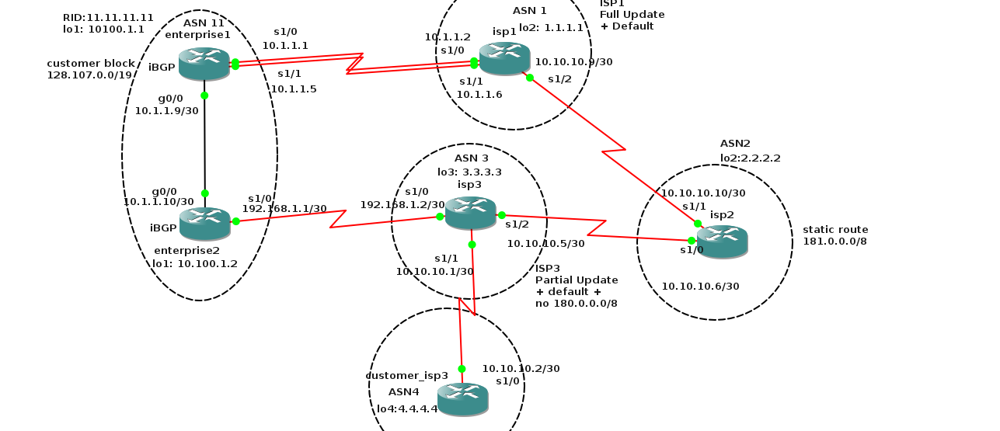
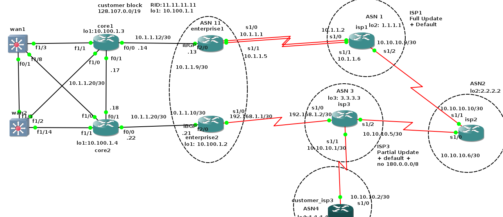
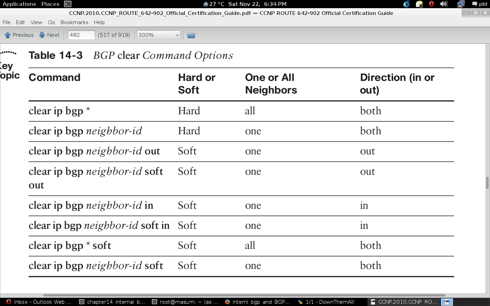

enterprise1(config-if)#do show ip interface brief Interface IP-Address OK? Method Status Protocol Ethernet0/0 unassigned YES unset administratively down down GigabitEthernet0/0 10.1.1.9 YES manual up up Serial1/0 10.1.1.1 YES NVRAM up up Serial1/1 10.1.1.5 YES NVRAM up up Serial1/2 192.168.1.1 YES NVRAM up down Serial1/3 unassigned YES NVRAM administratively down down Loopback1 10.100.1.1 YES manual up up enterprise1(config-if)# enterprise2(config-if)#do show ip interface brief Interface IP-Address OK? Method Status Protocol Ethernet0/0 unassigned YES unset administratively down down GigabitEthernet0/0 10.1.1.10 YES manual up up Serial1/0 192.168.1.1 YES manual up up Serial1/1 unassigned YES unset administratively down down Serial1/2 unassigned YES unset administratively down down Serial1/3 unassigned YES unset administratively down down Loopback1 10.100.1.2 YES manual up up enterprise2(config-if)# isp3(config)#do show ip interface brief Interface IP-Address OK? Method Status Protocol FastEthernet0/0 unassigned YES NVRAM administratively down down Serial1/0 192.168.1.2 YES NVRAM up up Serial1/1 10.10.10.1 YES NVRAM up up Serial1/2 10.10.10.5 YES NVRAM up up Serial1/3 unassigned YES NVRAM administratively down down Loopback3 3.3.3.3 YES NVRAM up up isp3(config)#one thing to keep in mind is that IOS does not set ttl=1 for ibgp peers therefore it does not need to configure ebgp-multihop command. also we need to configure loopback interface even for ibgp though this is not must. two enterprise ebgp peer may be resides in two diffrent subnets. eventually connectivity interruption can fail ebgp peer therefore for safety its good to configure loopback interface.
enterprise1(config)#router bgp 11 enterprise1(config-router)#neighbor 10.100.1.2 remote-as 11 enterprise1(config-router)#neighbor 10.100.1.2 update-source loopback 1 enterprise1(config-router)# enterprise2(config)#router bgp 11 enterprise2(config-router)#neighbor 10.100.1.1 remote-as 11 enterprise2(config-router)#neighbor 10.100.1.1 update-source loopback 1
enterprise1(config)#router ospf 1 enterprise1(config-router)#network 10.1.1.8 0.0.0.3 area 0 # done for interface enterprise1(config-router)#network 10.100.1.0 0.0.0.3 area 0 # done for loopback enterprise1(config-router)#do copy run start Destination filename [startup-config]? Building configuration... [OK] enterprise1(config-router)#do show ip ospf neighbor Neighbor ID Pri State Dead Time Address Interface 10.100.1.2 1 FULL/DR 00:00:38 10.1.1.10 GigabitEthernet0/0 enterprise1(config-router)# enterprise2(config)#router ospf 1 enterprise2(config-router)#network 10.1.1.8 0.0.0.3 area 0 enterprise2(config-router)#network 10.100.1.0 0.0.0.3 area 0 enterprise2(config-router)# enterprise2(config-router)#do copy run start Destination filename [startup-config]? Building configuration... [OK] enterprise2(config-router)#do show ip ospf neighbor Neighbor ID Pri State Dead Time Address Interface 10.100.1.1 1 FULL/BDR 00:00:33 10.1.1.9 GigabitEthernet0/0 enterprise2(config-router)#
enterprise2(config-router)#do show ip bgp summary
BGP router identifier 10.100.1.2, local AS number 11
BGP table version is 30, main routing table version 30
13 network entries using 1521 bytes of memory
23 path entries using 1196 bytes of memory
9/6 BGP path/bestpath attribute entries using 1116 bytes of memory
6 BGP AS-PATH entries using 144 bytes of memory
0 BGP route-map cache entries using 0 bytes of memory
0 BGP filter-list cache entries using 0 bytes of memory
BGP using 3977 total bytes of memory
BGP activity 13/0 prefixes, 24/1 paths, scan interval 60 secs
Neighbor V AS MsgRcvd MsgSent TblVer InQ OutQ Up/Down State/PfxRcd
3.3.3.3 4 3 59 50 30 0 0 00:43:11 12
10.100.1.1 4 11 8 9 30 0 0 00:00:43 11
enterprise2(config-router)#
enterprise1(config-router)#do show ip bgp summary
BGP router identifier 11.11.11.11, local AS number 11
BGP table version is 47, main routing table version 47
16 network entries using 1872 bytes of memory
26 path entries using 1352 bytes of memory
10/6 BGP path/bestpath attribute entries using 1240 bytes of memory
7 BGP AS-PATH entries using 168 bytes of memory
0 BGP route-map cache entries using 0 bytes of memory
0 BGP filter-list cache entries using 0 bytes of memory
BGP using 4632 total bytes of memory
BGP activity 56/40 prefixes, 74/48 paths, scan interval 60 secs
Neighbor V AS MsgRcvd MsgSent TblVer InQ OutQ Up/Down State/PfxRcd
1.1.1.1 4 1 86 84 47 0 0 00:04:57 11
10.100.1.2 4 11 9 8 47 0 0 00:00:53 9
enterprise1(config-router)#
enterprise1#show ip bgp neighbors 10.100.1.2
BGP neighbor is 10.100.1.2, remote AS 11, internal link
BGP version 4, remote router ID 10.100.1.2
BGP state = Established, up for 00:37:55
Last read 00:00:55, last write 00:00:56, hold time is 180, keepalive interval is 60 seconds
Neighbor capabilities:
Route refresh: advertised and received(old & new)
Address family IPv4 Unicast: advertised and received
Message statistics:
InQ depth is 0
OutQ depth is 0
Sent Rcvd
Opens: 3 3
Notifications: 0 0
Updates: 21 102
Keepalives: 54 54
Route Refresh: 0 0
Total: 78 159
Default minimum time between advertisement runs is 0 seconds
For address family: IPv4 Unicast
BGP table version 35, neighbor version 35/0
Output queue size : 0
Index 2, Offset 0, Mask 0x4
2 update-group member
Sent Rcvd
Prefix activity: ---- ----
Prefixes Current: 10 10 (Consumes 520 bytes)
Prefixes Total: 13 60
Implicit Withdraw: 0 0
Explicit Withdraw: 3 50
Used as bestpath: n/a 3
Used as multipath: n/a 0
Outbound Inbound
Local Policy Denied Prefixes: -------- -------
Bestpath from this peer: 10 n/a
Suppressed due to dampening: 3 n/a
Total: 13 0
Number of NLRIs in the update sent: max 6, min 0
Connections established 3; dropped 2
Last reset 00:38:52, due to User reset
Connection state is ESTAB, I/O status: 1, unread input bytes: 0
Connection is ECN Disabled, Mininum incoming TTL 0, Outgoing TTL 255
Local host: 10.100.1.1, Local port: 11729
Foreign host: 10.100.1.2, Foreign port: 179
Enqueued packets for retransmit: 0, input: 0 mis-ordered: 0 (0 bytes)
Event Timers (current time is 0x970A58):
Timer Starts Wakeups Next
Retrans 41 0 0x0
TimeWait 0 0 0x0
AckHold 89 79 0x0
SendWnd 0 0 0x0
KeepAlive 0 0 0x0
GiveUp 0 0 0x0
PmtuAger 0 0 0x0
DeadWait 0 0 0x0
iss: 1258292955 snduna: 1258294194 sndnxt: 1258294194 sndwnd: 16251
irs: 2423482826 rcvnxt: 2423487811 rcvwnd: 16054 delrcvwnd: 330
SRTT: 306 ms, RTTO: 349 ms, RTV: 43 ms, KRTT: 0 ms
minRTT: 68 ms, maxRTT: 452 ms, ACK hold: 200 ms
Flags: active open, nagle
IP Precedence value : 6
Datagrams (max data segment is 536 bytes):
Rcvd: 125 (out of order: 0), with data: 90, total data bytes: 4984
Sent: 132 (retransmit: 0, fastretransmit: 0, partialack: 0, Second Congestion: 0), with data: 42, total data bytes: 1238
enterprise1#
enterprise2(config-router)#do show ip bgp 181.0.0.0/8 longer-prefixes
BGP table version is 176, local router ID is 10.100.1.2
Status codes: s suppressed, d damped, h history, * valid, > best, i - internal,
r RIB-failure, S Stale
Origin codes: i - IGP, e - EGP, ? - incomplete
Network Next Hop Metric LocPrf Weight Path
* i181.0.0.0/8 1.1.1.1 0 100 0 1 2 ?
*> 3.3.3.3 0 3 2 ?
enterprise2(config-router)#
the example shown here above just indicating that the route is learnt from the iBGP peer as small i is placed infront of the route. but actually
best route is indicated by next line through 3.3.3.3 eBGP router and these path is learnt by from AS 2, then AS 3.
enterprise2(config-router)#
enterprise2(config-router)#do show ip bgp 181.0.0.0/8
BGP routing table entry for 181.0.0.0/8, version 8
Paths: (2 available, best #2, table Default-IP-Routing-Table)
Advertised to update-groups:
2
1 2
1.1.1.1 (metric 2) from 10.100.1.1 (11.11.11.11)
Origin incomplete, metric 0, localpref 100, valid, internal
3 2
3.3.3.3 from 3.3.3.3 (3.3.3.3)
Origin incomplete, localpref 100, valid, external, best
enterprise2(config-router)#
this output suggesting us that first one is internal while next one is best and by external. also we have to keep in mind that eBGP
does not tag AS number when they exchange route information to their own eBGP routers.
enterprise1(config)#do show ip bgp 192.135.250.0/28 longer-prefixes
BGP table version is 35, local router ID is 11.11.11.11
Status codes: s suppressed, d damped, h history, * valid, > best, i - internal,
r RIB-failure, S Stale
Origin codes: i - IGP, e - EGP, ? - incomplete
Network Next Hop Metric LocPrf Weight Path
*>i192.135.250.0/28 3.3.3.3 0 100 0 3 4 ?
* 1.1.1.1 0 1 2 3 4 ?
enterprise1(config)#
enterprise2(config-router)#do show ip bgp 192.135.250.0/28 longer-prefixes
BGP table version is 176, local router ID is 10.100.1.2
Status codes: s suppressed, d damped, h history, * valid, > best, i - internal,
r RIB-failure, S Stale
Origin codes: i - IGP, e - EGP, ? - incomplete
Network Next Hop Metric LocPrf Weight Path
*> 192.135.250.0/28 3.3.3.3 0 3 4 ?
enterprise2(config-router)#
here the lower half of the output related to enterprise2 route showing only one route which indicates two things.
enterprise1(config)#do show ip bgp 192.135.250.0/28 longer-prefixes
BGP table version is 35, local router ID is 11.11.11.11
Status codes: s suppressed, d damped, h history, * valid, > best, i - internal,
r RIB-failure, S Stale
Origin codes: i - IGP, e - EGP, ? - incomplete
Network Next Hop Metric LocPrf Weight Path
*>i192.135.250.0/28 3.3.3.3 0 100 0 3 4 ?
* 1.1.1.1 0 1 2 3 4 ?
enterprise1(config)#
next-hop is neither an ip address nor even loopback of iBGP router though this is learnt from it. but we can alter this behaviour by
using enterprise1(config)#router bgp 11 enterprise1(config-router)#neighbor 10.100.1.2 next-hop-self enterprise1(config-router)#do copy run start Destination filename [startup-config]? Building configuration... [OK] enterprise1(config-router)# enterprise2(config)#router bgp 11 enterprise2(config-router)#neighbor 10.100.1.1 next-hop-self enterprise2(config-router)# enterprise2(config-router)# enterprise2(config-router)#do copy run start Destination filename [startup-config]? Building configuration... [OK] enterprise2(config-router)#now verify this with the previously learnt route of 192.168.250.0/28. first before then after
enterprise1(config)#do show ip bgp 192.135.250.0/28 longer-prefixes
BGP table version is 35, local router ID is 11.11.11.11
Status codes: s suppressed, d damped, h history, * valid, > best, i - internal,
r RIB-failure, S Stale
Origin codes: i - IGP, e - EGP, ? - incomplete
Network Next Hop Metric LocPrf Weight Path
*>i192.135.250.0/28 3.3.3.3 0 100 0 3 4 ?
* 1.1.1.1 0 1 2 3 4 ?
enterprise1(config)#
enterprise1(config-router)#do show ip bgp 192.135.250.0/28 longer-prefixes
BGP table version is 77, local router ID is 11.11.11.11
Status codes: s suppressed, d damped, h history, * valid, > best, i - internal,
r RIB-failure, S Stale
Origin codes: i - IGP, e - EGP, ? - incomplete
Network Next Hop Metric LocPrf Weight Path
*>i192.135.250.0/28 10.100.1.2 0 100 0 3 4 ?
* 1.1.1.1 0 1 2 3 4 ?
enterprise1(config-router)#
and the output is showing exactly the expected.

to avoid loop occured inside an enterprise like the topology shown above we should
### enterprise1 running config
!
router bgp 11
bgp router-id 11.11.11.11
bgp log-neighbor-changes
neighbor 1.1.1.1 remote-as 1
neighbor 1.1.1.1 ebgp-multihop 2
neighbor 1.1.1.1 password 7 05080F1C2243
neighbor 1.1.1.1 update-source Loopback1
neighbor 10.100.1.2 remote-as 11
neighbor 10.100.1.2 update-source Loopback1
neighbor 10.100.1.3 remote-as 11
neighbor 10.100.1.3 password cisco
neighbor 10.100.1.3 update-source Loopback1
neighbor 10.100.1.4 remote-as 11
neighbor 10.100.1.4 password cisco
neighbor 10.100.1.4 update-source Loopback1
!
enterprise1#
enterprise1#show ip bgp summary
BGP router identifier 11.11.11.11, local AS number 11
BGP table version is 24, main routing table version 24
16 network entries using 1872 bytes of memory
23 path entries using 1196 bytes of memory
8/6 BGP path/bestpath attribute entries using 992 bytes of memory
5 BGP AS-PATH entries using 120 bytes of memory
0 BGP route-map cache entries using 0 bytes of memory
0 BGP filter-list cache entries using 0 bytes of memory
BGP using 4180 total bytes of memory
BGP activity 17/1 prefixes, 24/1 paths, scan interval 60 secs
Neighbor V AS MsgRcvd MsgSent TblVer InQ OutQ Up/Down State/PfxRcd
1.1.1.1 4 1 93 93 24 0 0 01:21:17 8
10.100.1.2 4 11 104 109 24 0 0 01:22:54 10
10.100.1.3 4 11 38 46 24 0 0 00:23:32 0
10.100.1.4 4 11 17 22 24 0 0 00:13:03 0
enterprise1#
### core1 configuration and summary
core1(config-router)#do show run | begin bgp
router bgp 11
no synchronization
bgp log-neighbor-changes
neighbor 10.100.1.1 remote-as 11
neighbor 10.100.1.1 password cisco
neighbor 10.100.1.1 update-source Loopback1
neighbor 10.100.1.2 remote-as 11
neighbor 10.100.1.2 password cisco
neighbor 10.100.1.2 update-source Loopback1
neighbor 10.100.1.4 remote-as 11
neighbor 10.100.1.4 password cisco
neighbor 10.100.1.4 update-source Loopback1
no auto-summary
!
core1(config-router)#do show ip bgp summary
BGP router identifier 10.100.1.3, local AS number 11
BGP table version is 18, main routing table version 18
13 network entries using 1521 bytes of memory
20 path entries using 1040 bytes of memory
8/6 BGP path/bestpath attribute entries using 992 bytes of memory
5 BGP AS-PATH entries using 120 bytes of memory
0 BGP route-map cache entries using 0 bytes of memory
0 BGP filter-list cache entries using 0 bytes of memory
BGP using 3673 total bytes of memory
BGP activity 17/4 prefixes, 24/4 paths, scan interval 60 secs
Neighbor V AS MsgRcvd MsgSent TblVer InQ OutQ Up/Down State/PfxRcd
10.100.1.1 4 11 47 39 18 0 0 00:24:35 10
10.100.1.2 4 11 40 34 18 0 0 00:24:36 10
10.100.1.4 4 11 17 17 18 0 0 00:13:55 0
core1(config-router)#
core1(config-router)#
### core1 bgp table
core1(config-router)#do show ip bgp
BGP table version is 18, local router ID is 10.100.1.3
Status codes: s suppressed, d damped, h history, * valid, > best, i - internal,
r RIB-failure, S Stale
Origin codes: i - IGP, e - EGP, ? - incomplete
Network Next Hop Metric LocPrf Weight Path
*>i1.1.1.1/32 10.100.1.1 0 100 0 ?
*>i2.2.2.2/32 10.100.1.1 0 100 0 1 ?
* i 10.100.1.2 0 100 0 3 ?
*>i3.3.3.3/32 10.100.1.1 0 100 0 1 2 ?
* i 10.100.1.2 0 100 0 3 4 ?
*>i4.4.4.4/32 10.100.1.2 0 100 0 3 ?
r>i10.100.1.1/32 10.100.1.1 0 100 0 1 ?
r>i10.100.1.2/32 10.100.1.2 0 100 0 3 ?
*>i128.107.0.0/19 10.100.1.1 0 100 0 i
* i181.0.0.0/8 10.100.1.2 0 100 0 3 2 ?
*>i 10.100.1.1 0 100 0 1 2 ?
* i182.0.0.0/8 10.100.1.2 0 100 0 3 2 ?
*>i 10.100.1.1 0 100 0 1 2 ?
* i183.0.0.0/8 10.100.1.2 0 100 0 3 2 ?
*>i 10.100.1.1 0 100 0 1 2 ?
* i184.0.0.0/8 10.100.1.2 0 100 0 3 2 ?
*>i 10.100.1.1 0 100 0 1 2 ?
* i185.0.0.0/8 10.100.1.2 0 100 0 3 2 ?
*>i 10.100.1.1 0 100 0 1 2 ?
*>i192.135.250.0/28 10.100.1.2 0 100 0 3 4 ?
core1(config-router)#
core1(config-router)#
### core2 bgp table
core2(config-router)#do show ip bgp
BGP table version is 21, local router ID is 10.100.1.4
Status codes: s suppressed, d damped, h history, * valid, > best, i - internal,
r RIB-failure, S Stale
Origin codes: i - IGP, e - EGP, ? - incomplete
Network Next Hop Metric LocPrf Weight Path
*>i1.1.1.1/32 10.100.1.1 0 100 0 ?
* i2.2.2.2/32 10.100.1.1 0 100 0 1 ?
*>i 10.100.1.2 0 100 0 3 ?
* i3.3.3.3/32 10.100.1.1 0 100 0 1 2 ?
*>i 10.100.1.2 0 100 0 3 4 ?
*>i4.4.4.4/32 10.100.1.2 0 100 0 3 ?
r>i10.100.1.1/32 10.100.1.1 0 100 0 1 ?
r>i10.100.1.2/32 10.100.1.2 0 100 0 3 ?
*>i128.107.0.0/19 10.100.1.1 0 100 0 i
*>i181.0.0.0/8 10.100.1.2 0 100 0 3 2 ?
* i 10.100.1.1 0 100 0 1 2 ?
*>i182.0.0.0/8 10.100.1.2 0 100 0 3 2 ?
* i 10.100.1.1 0 100 0 1 2 ?
*>i183.0.0.0/8 10.100.1.2 0 100 0 3 2 ?
* i 10.100.1.1 0 100 0 1 2 ?
*>i184.0.0.0/8 10.100.1.2 0 100 0 3 2 ?
* i 10.100.1.1 0 100 0 1 2 ?
*>i185.0.0.0/8 10.100.1.2 0 100 0 3 2 ?
* i 10.100.1.1 0 100 0 1 2 ?
*>i192.135.250.0/28 10.100.1.2 0 100 0 3 4 ?
core2(config-router)#
clearly showing in core1, enterprise2 is best next-hop for the 192.135.250.0/28 while enterprise1 is best for the 181-185/8.
on the other hand in core2, for both 192.135.250.0/28 and 181-185/8 is best reachable through core2.
enterprise#show ip bgp neighbors 1.1.1.1 advertised-routes
BGP table version is 20, local router ID is 11.11.11.11
Status codes: s suppressed, d damped, h history, * valid, > best, i - internal,
r RIB-failure, S Stale
Origin codes: i - IGP, e - EGP, ? - incomplete
Network Next Hop Metric LocPrf Weight Path
*> 1.1.1.1/32 0.0.0.0 0 32768 ?
*> 2.2.2.2/32 3.3.3.3 0 0 3 ?
*> 3.3.3.3/32 0.0.0.0 0 32768 ?
*> 4.4.4.4/32 3.3.3.3 0 0 3 ?
r> 11.11.11.11/32 3.3.3.3 0 0 3 ?
*> 128.107.0.0/19 0.0.0.0 32768 i
*> 181.0.0.0/8 3.3.3.3 0 3 2 ?
*> 182.0.0.0/8 3.3.3.3 0 3 2 ?
*> 183.0.0.0/8 3.3.3.3 0 3 2 ?
*> 184.0.0.0/8 3.3.3.3 0 3 2 ?
*> 185.0.0.0/8 3.3.3.3 0 3 2 ?
*> 192.135.250.0/28 3.3.3.3 0 3 4 ?
Total number of prefixes 12
enterprise#
enterprise#config t Enter configuration commands, one per line. End with CNTL/Z. enterprise(config)# enterprise(config)# enterprise(config)#ip prefix-list ? WORD Name of a prefix list sequence-number Include/exclude sequence numbers in NVGEN enterprise(config)#ip prefix-list only-public ? deny Specify packets to reject description Prefix-list specific description permit Specify packets to forward seq sequence number of an entry enterprise(config)#ip prefix-list only-public permit 128.107.0.0/19 enterprise(config)#
enterprise(config)#router bgp 11 enterprise(config-router)# enterprise(config-router)#neighbor 1.1.1.1 ? prefix-list Filter updates to/from this neighbor enterprise(config-router)#neighbor 1.1.1.1 prefix-list only-public ? in Filter incoming updates out Filter outgoing updates enterprise(config-router)#neighbor 1.1.1.1 prefix-list only-public out enterprise(config-router)# enterprise(config-router)#do copy run start Destination filename [startup-config]? Building configuration... [OK] enterprise(config-router)# enterprise(config-router)#exit enterprise(config)#exit
enterprise#show ip bgp neighbors 1.1.1.1 advertised-routes
BGP table version is 20, local router ID is 11.11.11.11
Status codes: s suppressed, d damped, h history, * valid, > best, i - internal,
r RIB-failure, S Stale
Origin codes: i - IGP, e - EGP, ? - incomplete
Network Next Hop Metric LocPrf Weight Path
*> 1.1.1.1/32 0.0.0.0 0 32768 ?
*> 2.2.2.2/32 3.3.3.3 0 0 3 ?
*> 3.3.3.3/32 0.0.0.0 0 32768 ?
*> 4.4.4.4/32 3.3.3.3 0 0 3 ?
r> 11.11.11.11/32 3.3.3.3 0 0 3 ?
*> 128.107.0.0/19 0.0.0.0 32768 i
*> 181.0.0.0/8 3.3.3.3 0 3 2 ?
*> 182.0.0.0/8 3.3.3.3 0 3 2 ?
*> 183.0.0.0/8 3.3.3.3 0 3 2 ?
*> 184.0.0.0/8 3.3.3.3 0 3 2 ?
*> 185.0.0.0/8 3.3.3.3 0 3 2 ?
*> 192.135.250.0/28 3.3.3.3 0 3 4 ?
Total number of prefixes 12
enterprise#
enterprise#
enterprise#clear ip bgp 1.1.1.1
enterprise#
*Nov 22 19:37:34.819: BGPNSF state: 1.1.1.1 went from nsf_not_active to nsf_not_active
*Nov 22 19:37:34.819: BGP: 1.1.1.1 went from Established to Idle
*Nov 22 19:37:34.819: %BGP-5-ADJCHANGE: neighbor 1.1.1.1 Down User reset
enterprise#
*Nov 22 19:37:34.819: BGP: 1.1.1.1 closing
enterprise#
*Nov 22 19:37:36.835: BGP: 1.1.1.1 went from Idle to Active
*Nov 22 19:37:36.851: BGP: 1.1.1.1 open active, local address 11.11.11.11
*Nov 22 19:37:36.895: BGP: 1.1.1.1 went from Active to OpenSent
*Nov 22 19:37:36.895: BGP: 1.1.1.1 sending OPEN, version 4, my as: 11, holdtime 180 seconds
*Nov 22 19:37:36.895: BGP: 1.1.1.1 send message type 1, length (incl. header) 45
*Nov 22 19:37:36.923: BGP: 1.1.1.1 rcv message type 1, length (excl. header) 26
*Nov 22 19:37:36.923: BGP: 1.1.1.1 rcv OPEN, version 4, holdtime 180 seconds
*Nov 22 19:37:36.923: BGP: 1.1.1.1 rcv OPEN w/ OPTION parameter len: 16
*Nov 22 19:37:36.923: BGP: 1.1.1.1 rcvd OPEN w/ optional parameter type 2 (Capability) len 6
*Nov 22 19:37:36.923: BGP: 1.1.1.1 OPEN has CAPABILITY code: 1, length 4
*Nov 22 19:37:36.923: BGP: 1.1.1.1 OPEN has MP_EXT CAP for afi/safi: 1/1
*Nov 22 19:37:36.923: BGP: 1.1.1.1 rcvd OPEN w/ optional parameter type 2 (Capability) len 2
*Nov 22 19:37:36.923: BGP: 1.1.1.1 OPEN has CAPABILIT
enterprise#Y code: 128, length 0
*Nov 22 19:37:36.923: BGP: 1.1.1.1 OPEN has ROUTE-REFRESH capability(old) for all address-families
*Nov 22 19:37:36.923: BGP: 1.1.1.1 rcvd OPEN w/ optional parameter type 2 (Capability) len 2
*Nov 22 19:37:36.923: BGP: 1.1.1.1 OPEN has CAPABILITY code: 2, length 0
*Nov 22 19:37:36.923: BGP: 1.1.1.1 OPEN has ROUTE-REFRESH capability(new) for all address-families
BGP: 1.1.1.1 rcvd OPEN w/ remote AS 1
*Nov 22 19:37:36.923: BGP: 1.1.1.1 went from OpenSent to OpenConfirm
*Nov 22 19:37:36.923: BGP: 1.1.1.1 went from OpenConfirm to Established
*Nov 22 19:37:36.923: %BGP-5-ADJCHANGE: neighbor 1.1.1.1 Up
enterprise#
enterprise#
enterprise#
enterprise#show ip bgp neighbors 1.1.1.1 advertised-routes
BGP table version is 20, local router ID is 11.11.11.11
Status codes: s suppressed, d damped, h history, * valid, > best, i - internal,
r RIB-failure, S Stale
Origin codes: i - IGP, e - EGP, ? - incomplete
Network Next Hop Metric LocPrf Weight Path
*> 128.107.0.0/19 0.0.0.0 32768 i
Total number of prefixes 1
enterprise#
enterprise(config-router)#do show ip bgp neighbor 1.1.1.1 advertised-routes
BGP table version is 20, local router ID is 11.11.11.11
Status codes: s suppressed, d damped, h history, * valid, > best, i - internal,
r RIB-failure, S Stale
Origin codes: i - IGP, e - EGP, ? - incomplete
Network Next Hop Metric LocPrf Weight Path
*> 1.1.1.1/32 0.0.0.0 0 32768 ?
*> 2.2.2.2/32 3.3.3.3 0 0 3 ?
*> 3.3.3.3/32 0.0.0.0 0 32768 ?
*> 4.4.4.4/32 3.3.3.3 0 0 3 ?
r> 11.11.11.11/32 3.3.3.3 0 0 3 ?
*> 128.107.0.0/19 0.0.0.0 32768 i
*> 181.0.0.0/8 3.3.3.3 0 3 2 ?
*> 182.0.0.0/8 3.3.3.3 0 3 2 ?
*> 183.0.0.0/8 3.3.3.3 0 3 2 ?
*> 184.0.0.0/8 3.3.3.3 0 3 2 ?
*> 185.0.0.0/8 3.3.3.3 0 3 2 ?
*> 192.135.250.0/28 3.3.3.3 0 3 4 ?
Total number of prefixes 12
enterprise(config)#ip prefix-list only-public ? deny Specify packets to reject description Prefix-list specific description permit Specify packets to forward seq sequence number of an entry enterprise(config)#ip prefix-list only-public permit ? A.B.C.D/nn IP prefix/ , e.g., 35.0.0.0/8 enterprise(config)#ip prefix-list only-public permit 128.107.0.0/19 ? ge Minimum prefix length to be matched le Maximum prefix length to be matched enterprise(config)#ip prefix-list only-public permit 128.107.0.0/19
enterprise(config)# enterprise(config)# enterprise(config)#route-map ? WORD Route map tag enterprise(config)#route-map match-128 ? <0-65535> Sequence to insert to/delete from existing route-map entry deny Route map denies set operations permit Route map permits set operationsenterprise(config)#route-map match-128 10 enterprise(config-route-map)# enterprise(config-route-map)# enterprise(config-route-map)#match ip ? address Match address of route or match packet next-hop Match next-hop address of route route-source Match advertising source address of route enterprise(config-route-map)#match ip address ? <1-199> IP access-list number <1300-2699> IP access-list number (expanded range) WORD IP access-list name prefix-list Match entries of prefix-lists enterprise(config-route-map)#match ip address prefix-list only-public ? WORD IP prefix-list name enterprise(config-route-map)#match ip address prefix-list only-public enterprise(config-route-map)# enterprise(config-route-map)# enterprise(config-route-map)#exit
enterprise(config)#router bgp 11 enterprise(config-router)#neighbor 1.1.1.1 route-map ? WORD Name of route map enterprise(config-router)#neighbor 1.1.1.1 route-map match-128 ? in Apply map to incoming routes out Apply map to outbound routes enterprise(config-router)#neighbor 1.1.1.1 route-map match-128 out enterprise(config-router)# enterprise(config-router)# enterprise(config-router)#do copy run start Destination filename [startup-config]? Building configuration... [OK] enterprise(config-router)# enterprise(config-router)#
enterprise(config-router)#do show ip bgp neighbor 1.1.1.1 advertised-routes
BGP table version is 20, local router ID is 11.11.11.11
Status codes: s suppressed, d damped, h history, * valid, > best, i - internal,
r RIB-failure, S Stale
Origin codes: i - IGP, e - EGP, ? - incomplete
Network Next Hop Metric LocPrf Weight Path
*> 128.107.0.0/19 0.0.0.0 32768 i
Total number of prefixes 1
enterprise(config-router)#
enterprise#show ip bgp neighbors 1.1.1.1 advertised-routes
BGP table version is 20, local router ID is 11.11.11.11
Status codes: s suppressed, d damped, h history, * valid, > best, i - internal,
r RIB-failure, S Stale
Origin codes: i - IGP, e - EGP, ? - incomplete
Network Next Hop Metric LocPrf Weight Path
*> 1.1.1.1/32 0.0.0.0 0 32768 ?
*> 2.2.2.2/32 3.3.3.3 0 0 3 ?
*> 3.3.3.3/32 0.0.0.0 0 32768 ?
*> 4.4.4.4/32 3.3.3.3 0 0 3 ?
r> 11.11.11.11/32 3.3.3.3 0 0 3 ?
*> 128.107.0.0/19 0.0.0.0 32768 i
*> 181.0.0.0/8 3.3.3.3 0 3 2 ?
*> 182.0.0.0/8 3.3.3.3 0 3 2 ?
*> 183.0.0.0/8 3.3.3.3 0 3 2 ?
*> 184.0.0.0/8 3.3.3.3 0 3 2 ?
*> 185.0.0.0/8 3.3.3.3 0 3 2 ?
*> 192.135.250.0/28 3.3.3.3 0 3 4 ?
Total number of prefixes 12
enterprise#
enterprise(config)#access-list ? <1-99> IP standard access list <100-199> IP extended access list <1100-1199> Extended 48-bit MAC address access list <1300-1999> IP standard access list (expanded range) <200-299> Protocol type-code access list <2000-2699> IP extended access list (expanded range) <700-799> 48-bit MAC address access list compiled Enable IP access-list compilation dynamic-extended Extend the dynamic ACL absolute timer rate-limit Simple rate-limit specific access list enterprise(config)#access-list 101 ? deny Specify packets to reject dynamic Specify a DYNAMIC list of PERMITs or DENYs permit Specify packets to forward remark Access list entry comment enterprise(config)#access-list 101 permit ? <0-255> An IP protocol number ahp Authentication Header Protocol eigrp Cisco's EIGRP routing protocol esp Encapsulation Security Payload gre Cisco's GRE tunneling icmp Internet Control Message Protocol igmp Internet Gateway Message Protocol ip Any Internet Protocol ipinip IP in IP tunneling nos KA9Q NOS compatible IP over IP tunneling ospf OSPF routing protocol pcp Payload Compression Protocol pim Protocol Independent Multicast tcp Transmission Control Protocol udp User Datagram Protocol enterprise(config)#access-list 101 permit ip ? A.B.C.D Source address any Any source host host A single source host enterprise(config)#access-list 101 permit ip host 128.107.0.0 ? A.B.C.D Destination address any Any destination host host A single destination host enterprise(config)#access-list 101 permit ip host 128.107.0.0 host ? Hostname or A.B.C.D Destination address enterprise(config)#$ 101 permit ip host 128.107.0.0 host 255.255.224.0 ? dscp Match packets with given dscp value fragments Check non-initial fragments log Log matches against this entry log-input Log matches against this entry, including input interface precedence Match packets with given precedence value time-range Specify a time-range tos Match packets with given TOS valueenterprise(config)#$ 101 permit ip host 128.107.0.0 host 255.255.224.0
enterprise(config)#router bgp 11 enterprise(config-router)# enterprise(config-router)# enterprise(config-router)#neighbor 1.1.1.1 ? distribute-list Filter updates to/from this neighbor enterprise(config-router)#neighbor 1.1.1.1 distribute-list ? <1-199> IP access list number <1300-2699> IP access list number (expanded range) WORD IP Access-list name enterprise(config-router)#neighbor 1.1.1.1 distribute-list 101 ? in Filter incoming updates out Filter outgoing updates enterprise(config-router)#neighbor 1.1.1.1 distribute-list 101 out ?enterprise(config-router)#neighbor 1.1.1.1 distribute-list 101 out
enterprise(config-router)#do show ip bgp neighbors 1.1.1.1 advertised-routes
BGP table version is 20, local router ID is 11.11.11.11
Status codes: s suppressed, d damped, h history, * valid, > best, i - internal,
r RIB-failure, S Stale
Origin codes: i - IGP, e - EGP, ? - incomplete
Network Next Hop Metric LocPrf Weight Path
*> 128.107.0.0/19 0.0.0.0 32768 i
Total number of prefixes 1
enterprise(config-router)#
isp1#show ip bgp neighbors 11.11.11.11 received-routes
BGP table version is 27, local router ID is 1.1.1.1
Status codes: s suppressed, d damped, h history, * valid, > best, i - internal,
r RIB-failure, S Stale
Origin codes: i - IGP, e - EGP, ? - incomplete
Network Next Hop Metric LocPrf Weight Path
*> 128.107.0.0/19 11.11.11.11 0 0 11 i
Total number of prefixes 1
isp1#

enterprise#show ip bgp neighbors 1.1.1.1
BGP neighbor is 1.1.1.1, remote AS 1, external link
BGP version 4, remote router ID 1.1.1.1
BGP state = Established, up for 00:00:36
Last read 00:00:05, last write 00:00:05, hold time is 180, keepalive interval is 60 seconds
Neighbor capabilities:
### here is the setting which is enabled by default
Route refresh: advertised and received(old & new)
Address family IPv4 Unicast: advertised and received
Message statistics:
InQ depth is 0
OutQ depth is 0
Sent Rcvd
Opens: 1 1
Notifications: 0 0
Updates: 5 5
Keepalives: 2 2
Route Refresh: 0 0
Total: 8 8
Default minimum time between advertisement runs is 30 seconds
For address family: IPv4 Unicast
BGP table version 20, neighbor version 20/0
Output queue size: 0
--More--
enterprise#debug ip bgp
BGP debugging is on for address family: IPv4 Unicast
enterprise#
enterprise#clear ip bgp 1.1.1.1 soft in
enterprise#
*Nov 22 18:48:02.975: BGP: 1.1.1.1 sending REFRESH_REQ(5) for afi/safi: 1/1
*Nov 22 18:48:02.979: BGP: 1.1.1.1 send message type 5, length (incl. header) 23
enterprise#
isp1#show ip bgp neighbors 2.2.2.2 ?
advertised-routes Display the routes advertised to a BGP neighbor
dampened-routes Display the dampened routes received from neighbor (eBGP
peers only)
flap-statistics Display flap statistics of the routes learned from
neighbor (eBGP peers only)
paths Display AS paths learned from neighbor
policy Display neighbor polices per address-family
received Display information received from a BGP neighbor
received-routes Display the received routes from neighbor
routes Display routes learned from neighbor
| Output modifiers
isp1#
isp1#show ip bgp neighbors 2.2.2.2 routes
BGP table version is 14, local router ID is 1.1.1.1
Status codes: s suppressed, d damped, h history, * valid, > best, i - internal,
r RIB-failure, S Stale
Origin codes: i - IGP, e - EGP, ? - incomplete
Network Next Hop Metric LocPrf Weight Path
r> 1.1.1.1/32 2.2.2.2 0 0 2 ?
* 2.2.2.2/32 2.2.2.2 0 2 3 ?
*> 3.3.3.3/32 2.2.2.2 0 0 2 ?
* 4.4.4.4/32 2.2.2.2 0 2 3 ?
* 11.11.11.11/32 2.2.2.2 0 2 3 ?
*> 181.0.0.0/8 2.2.2.2 0 0 2 ?
*> 182.0.0.0/8 2.2.2.2 0 0 2 ?
*> 183.0.0.0/8 2.2.2.2 0 0 2 ?
*> 184.0.0.0/8 2.2.2.2 0 0 2 ?
*> 185.0.0.0/8 2.2.2.2 0 0 2 ?
* 192.135.250.0/28 2.2.2.2 0 2 3 4 ?
Total number of prefixes 11
isp1#show ip bgp neighbors 2.2.2.2 received-routes % Inbound soft reconfiguration not enabled on 2.2.2.2 isp1#the above command shows that soft-reconfiguration is not enable for the neighbor 2.2.2.2. so let do it.
isp1#config t
Enter configuration commands, one per line. End with CNTL/Z.
isp1(config)#
isp1(config)#router bgp 1
isp1(config-router)#neighbor 2.2.2.2 ?
soft-reconfiguration Per neighbor soft reconfiguration
isp1(config-router)#neighbor 2.2.2.2 soft-reconfiguration ?
inbound Allow inbound soft reconfiguration for this neighbor
isp1(config-router)#neighbor 2.2.2.2 soft-reconfiguration inbound
isp1(config-router)#
isp1(config-router)#do copy run start
Destination filename [startup-config]?
Building configuration...
[OK]
isp1(config-router)#
isp1(config-router)#exit
isp1#
*Nov 22 18:57:10.347: %SYS-5-CONFIG_I: Configured from console by console
isp1#
### and verify that.:w
isp1#show ip bgp neighbors 2.2.2.2 received-routes
BGP table version is 14, local router ID is 1.1.1.1
Status codes: s suppressed, d damped, h history, * valid, > best, i - internal,
r RIB-failure, S Stale
Origin codes: i - IGP, e - EGP, ? - incomplete
Network Next Hop Metric LocPrf Weight Path
r> 1.1.1.1/32 2.2.2.2 0 0 2 ?
* 2.2.2.2/32 2.2.2.2 0 2 3 ?
*> 3.3.3.3/32 2.2.2.2 0 0 2 ?
* 4.4.4.4/32 2.2.2.2 0 2 3 ?
* 11.11.11.11/32 2.2.2.2 0 2 3 ?
*> 181.0.0.0/8 2.2.2.2 0 0 2 ?
*> 182.0.0.0/8 2.2.2.2 0 0 2 ?
*> 183.0.0.0/8 2.2.2.2 0 0 2 ?
*> 184.0.0.0/8 2.2.2.2 0 0 2 ?
*> 185.0.0.0/8 2.2.2.2 0 0 2 ?
* 192.135.250.0/28 2.2.2.2 0 2 3 4 ?
Total number of prefixes 11
isp1#
so this is ok now.